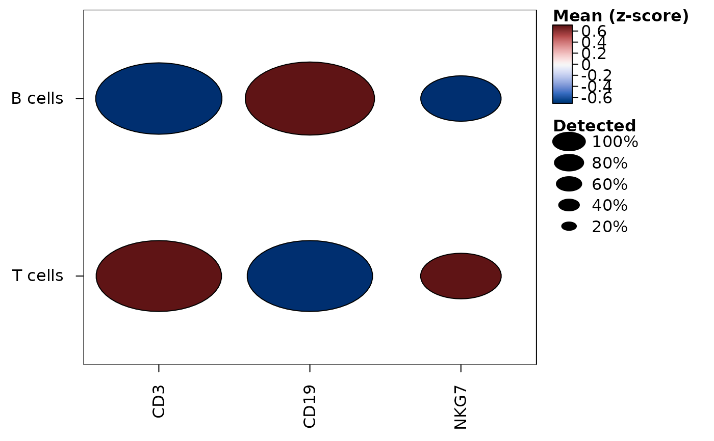
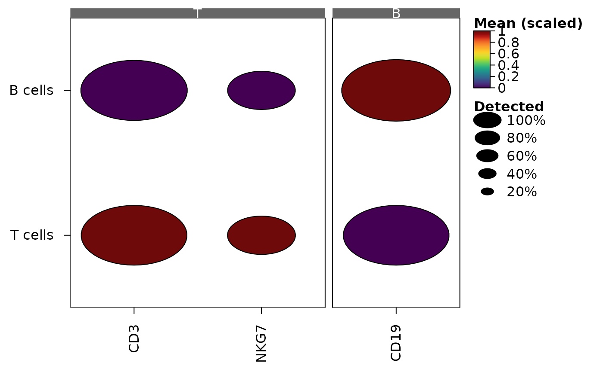
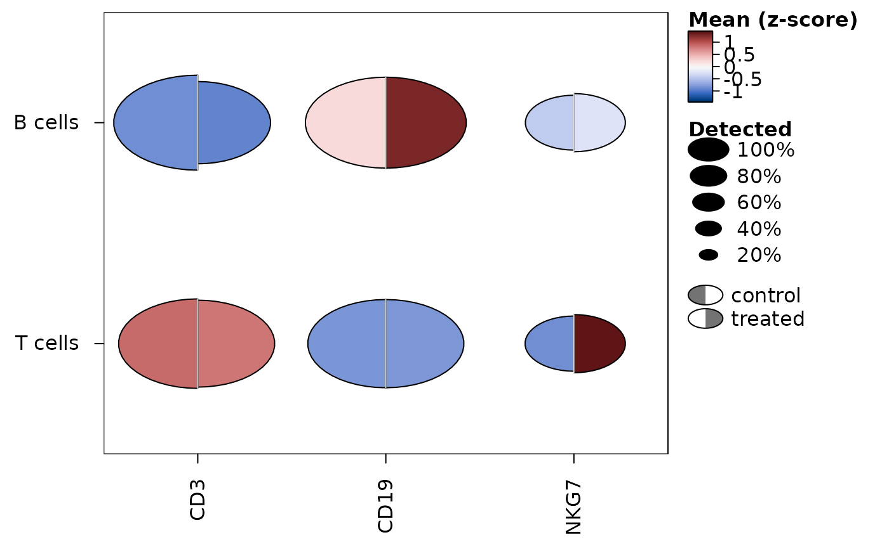
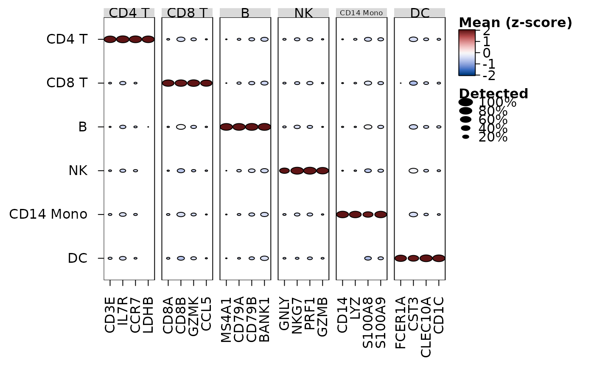

heat_map_dot() draws a dot plot of single-cell data, with one row per
group of cells (e.g. per cluster) and one column per feature: the colour of
each dot is the mean of the feature in the group, scaled within each
feature, and its area the proportion of the group's cells in which the
feature is detected, as Seurat's DotPlot() (Hao et al. 2024) and
scanpy's dotplot() (Wolf et al. 2018) draw them. The means and
proportions are found in one pass over the data, from the non-zero values of
sparse data (see
heat_map_summarise). The plot is a heatmap of circles, so
every option of heat_map can be added through ..., e.g.
a dendrogram of the groups (tree_y = TRUE) or annotations.
Usage
heat_map_dot(
x,
features = NULL,
group_by = NULL,
split_by = NULL,
assay = NULL,
scale = "zscore",
scale_limits = NULL,
threshold = 0,
dot_min = 0,
swap_axes = FALSE,
bimodal = FALSE,
transform = NULL,
cofactor = 5,
marker_colour = "logfc",
marker_size = "p_adj",
...
)Arguments
- x
single-cell data, a matrix or a data.frame (see
heat_map), or the markers returned byheat_map_markersfor a dot plot of markers.- features
the features to show (see
heat_map). A named list of features, or the markers returned byheat_map_markers, groups the columns, labelled by group (as scanpy'svar_group_positionsbrackets do).- group_by
the group of each cell, the name of a column of its metadata or a vector (see
heat_map). Each group is one row. Several column names give one row per combination, e.g.c("cell_type", "condition")for each cell type in each condition: the rows are grouped by the first variable (in labelled strips) and each row is labelled by the others.- split_by
a variable with two values (e.g. two conditions, or two samples) by which to split each dot down the middle: the name of a column of the cells' metadata or a vector with one value per cell, as
group_by. The left half of each dot shows the cells of the group with the first value (the first factor level, or first in sorted order) and the right half those with the second, each half with its own colour and size, on the same scales: the means are scaled within each feature across the groups and both values. Cells without a value are left out, and the halves of groups without cells are not drawn. Set toNULLby default for whole dots.- assay
the values of single-cell data to show (see
heat_map).- scale
how the means are scaled within each feature for their colour:
"zscore"(the default) for z-scores across the groups, clipped toscale_limits, as Seurat'sDotPlot()scales them,"range"to scale them from 0 to 1, as scanpy'sstandard_scale = "var"does, or"none"to show the means themselves.- scale_limits
the limits that scaled means are clipped to, set to
c(-2.5, 2.5)for z-scores by default (Seurat'scol.minandcol.max) and not clipped otherwise.- threshold
values above
thresholdare counted as detected, set to 0 by default - aftertransform.- dot_min
the smallest proportion of a group's cells detected for a dot to be drawn, set to 0 by default (as Seurat's
dot.min).- swap_axes
logical indicating whether the features should be drawn as rows and the groups as columns, set to
FALSEby default.- bimodal
TRUEto outline, with a thick border, the dots of groups in which a feature looks like two populations among the cells it is detected in (e.g. a cluster combining two smaller ones), from the dip (Hartigan and Hartigan 1985) of each feature in each group; or the smallest dip to outline. Set toFALSEby default. Seeheat_map_summarisefor how the dips are found andheat_mapfor when a dot is outlined. Can't be combined withsplit_by.- transform
"asinh"to transform the values of the cells with the inverse hyperbolic sine of each value divided bycofactorbefore their means are taken (the usual transform of cytometry intensities), orNULL(default) to use the values as they are, as inheat_map_summarise. The zeros of sparse data stay zeros, so they are transformed without a dense copy.- cofactor
the cofactor of
transform = "asinh": one number (5 by default, as for mass cytometry; about 150 is common for flow cytometry) or one per feature, named by feature.- marker_colour, marker_size
for a dot plot of markers (
xfromheat_map_markers), the columns of the markers that colour and size the dots:"logfc"(the default colour, on a diverging scale centred at 0),"auc"(centred at 0.5, and sized from 0.5),"p_adj"(the default size) or"p_value"(as -log10(p)),"mean_in","mean_out","detected_in"or"detected_out". Each column of the plot is a feature, asfeatureschooses them (by default the top markers of each group, grouped by the group they mark), and each row a group; a feature has a dot in each group where it passed the filters ofheat_map_markers(all of them withmin_detected = 0andmin_logfc = -Inf). The colours are not scaled unlessscaleis given, anddot_minleaves out the dots of groups in which fewer cells are detected (detected_in).- ...
other arguments passed to
heat_map, e.g.cell_col_scale,tree_yorpopup. They replace the settings of the dot plot of the same name.bar_values_y = "n"(bar_values_xwithswap_axes = TRUE) draws the number of cells in each group as bars.
Value
an object of class heat_map, as returned by
heat_map, whose data are the scaled means (of the first
value of split_by, whose second is in cell_split). The means, the
proportions detected and the cells in each group are returned by
heat_map_summarise.
References
Hao, Y. et al. (2024). Dictionary learning for integrative, multimodal and scalable single-cell analysis. Nature Biotechnology, 42(2), 293-304. doi:10.1038/s41587-023-01767-y
Hartigan, J. A. and Hartigan, P. M. (1985). The dip test of unimodality. The Annals of Statistics, 13(1), 70-84. doi:10.1214/aos/1176346577
Wolf, F. A., Angerer, P. and Theis, F. J. (2018). SCANPY: large-scale single-cell gene expression data analysis. Genome Biology, 19, 15. doi:10.1186/s13059-017-1382-0
Examples
set.seed(1)
cells <- data.frame(
CD3 = c(rexp(200, 0.5), rexp(60, 4)) * rbinom(260, 1, 0.7),
CD19 = c(rexp(200, 4), rexp(60, 0.5)) * rbinom(260, 1, 0.7),
NKG7 = rexp(260, 1) * rbinom(260, 1, 0.3),
cluster = rep(c("T cells", "B cells"), c(200, 60))
)
heat_map_dot(cells, group_by = "cluster", popup = FALSE)

# Features in groups, scaled from 0 to 1 within each feature
heat_map_dot(
cells,
features = list(T = c("CD3", "NKG7"), B = "CD19"),
group_by = "cluster",
scale = "range",
popup = FALSE
)

# Markers of each cluster, coloured by log fold change and sized by
# -log10 of the adjusted p-value
markers <- heat_map_markers(cells, group_by = "cluster", n = 2,
min_detected = 0, min_logfc = -Inf)
heat_map_dot(markers, popup = FALSE)
 # Each dot split by condition - control on the left, treated on the right
cells$condition <- rep(c("control", "treated"), 130)
heat_map_dot(cells, group_by = "cluster", split_by = "condition",
popup = FALSE)
# Each dot split by condition - control on the left, treated on the right
cells$condition <- rep(c("control", "treated"), 130)
heat_map_dot(cells, group_by = "cluster", split_by = "condition",
popup = FALSE)

# Blood cells, with the dots of groups whose cells look like two
# populations outlined
blood <- heat_map_example("rna", n = 1500)
heat_map_dot(blood, features = attr(blood, "markers"),
group_by = "cell_type", bimodal = TRUE, popup = FALSE)
